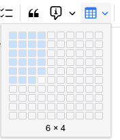
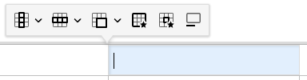
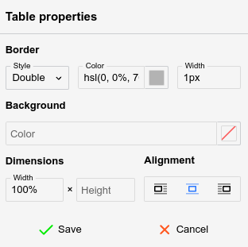
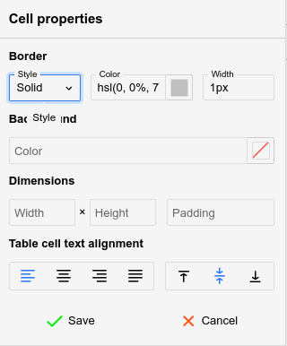

Tables are a powerful feature for Text notes,
since editing them is generally easy.

To create a table, simply press the table button and select with the mouse
the desired amount of columns and rows, as indicated in the adjacent figure.
Formatting toolbar
When a table is selected, a special formatting toolbar will appear:

Navigating a table
Using the mouse:
Click on a cell to focus it.
Click the
button at the top or the bottom of a table to insert an empty paragraph
near it.
Click the
button at the top-left of the table to select it entirely (for easy copy-pasting
or cutting) or drag and drop it to relocate the table.
Using the keyboard:
Use the arrow keys on the keyboard to easily navigate between cells.
It's also possible to use Tab to go to the next cell and Shift+Tab
to go to the previous cell.
Unlike arrow keys, pressing Tab at the end of the table (last
row, last column) will create a new row automatically.
To select multiple cells, hold Shift while using the arrow keys.
Resizing cells
Columns can be resized by hovering the mouse over the border of two adjacent
cells and dragging it.
By default, the row height is not adjustable using the mouse, but it can
be configured from the cell settings (see below).
To adjust exactly the width (in pixels or percentages) of a cell, select
the
button.
Inserting new rows and new columns
To insert a new column, click on a desired location, then press the
button from the formatting toolbar and select Insert column left or right.
To insert a new row, click on a desired location, then press the
button and select Insert row above or below.
A quicker alternative to creating a new row while at the end of the table
is to press the Tab key.
Merging cells
To merge two or more cells together, simply select them via drag &
drop and press the
button from the formatting toolbar.
More options are available by pressing the arrow next to it:
Click on a single cell and select Merge cell up/down/right/left to merge
with an adjacent cell.
Select Split cell vertically or horizontally, to split
a cell into multiple cells (can also be used to undo a merge).
Table properties

The table properties can be accessed via the
button and allows for the following adjustments:
Border (not the border of the cells, but the outer rim of the table),
which includes the style (single, double), color and width.
The background color, with none set by default.
The width and height of the table in percentage (must end with %)
or pixels (must end with px).
The alignment of the table.
Left or right-aligned, case in which the text will flow next to it.
Centered, case in which text will avoid the table, regardless of the table
width.
The table will immediately update to reflect the changes, but the Save button
must be pressed for the changes to persist.
Cell properties

Similarly to table properties, the
button opens a popup which adjusts the styling of one or more cells (based
on the user's selection).
The following options can be adjusted:
The border style, color and width (same as table properties), but applying
to the current cell only.
The background color, with none set by default.
The width and height of the cell in percentage (must end with %)
or pixels (must end with px).
The padding (the distance of the text compared to the cell's borders).
The alignment of the text, both horizontally (left, centered, right, justified)
and vertically (top, middle or bottom).
The cell will immediately update to reflect the changes, but the Save button
must be pressed for the changes to persist.
Caption
Press the
button to insert a caption or a text description of the table, which is
going to be displayed above the table.
Table borders
By default, tables will come with a predefined gray border.
To adjust the borders, follow these steps:
Select the table.
In the floating panel, select the Table properties option (
).
Look for the Border section at the top of the newly opened panel.
This will control the outer borders of the table.
Select a style for the border. Generally Single is the desirable
option.
Select a color for the border.
Select a width for the border, expressed in pixels.
Select all the cells of the table and then press the Cell properties option
(
).
This will control the inner borders of the table, at cell level.
Note that it's possible to change the borders individually by selecting
one or more cells, case in which it will only change the borders that intersect
these cells.
Repeat the same steps as from step (2).
Tables with invisible borders
Tables can be set to have invisible borders in order to allow for basic
layouts (columns, grids) of text or images without
the distraction of their border:
First insert a table with the desired number of columns and rows.
Select the entire table.
In Table properties, set:
Style to Single
Color to transparent
Width to 1px.
In Cell Properties, set the same as on the previous step.
Markdown import/export
Simple tables are exported in GitHub-flavored Markdown format (e.g. a
series of | items). If the table is found
to be more complex (it contains HTML elements, has custom sizes or images),
the table is converted to a HTML one instead.
Generally formatting loss should be minimal when exported to Markdown
due to the fallback to HTML formatting.